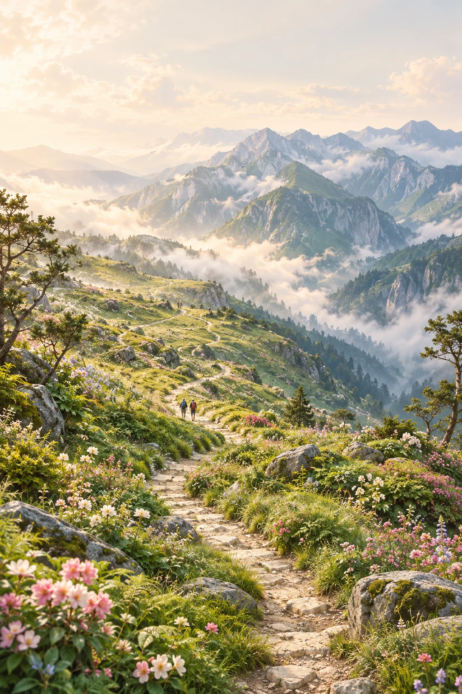
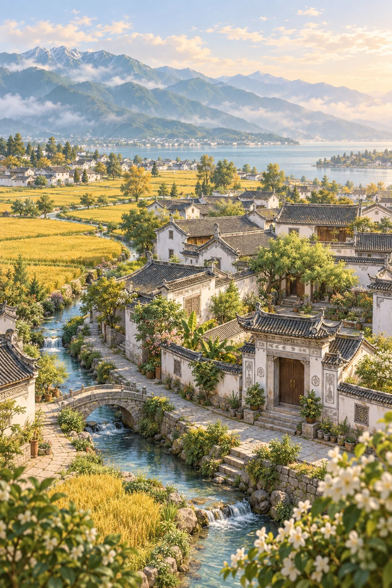
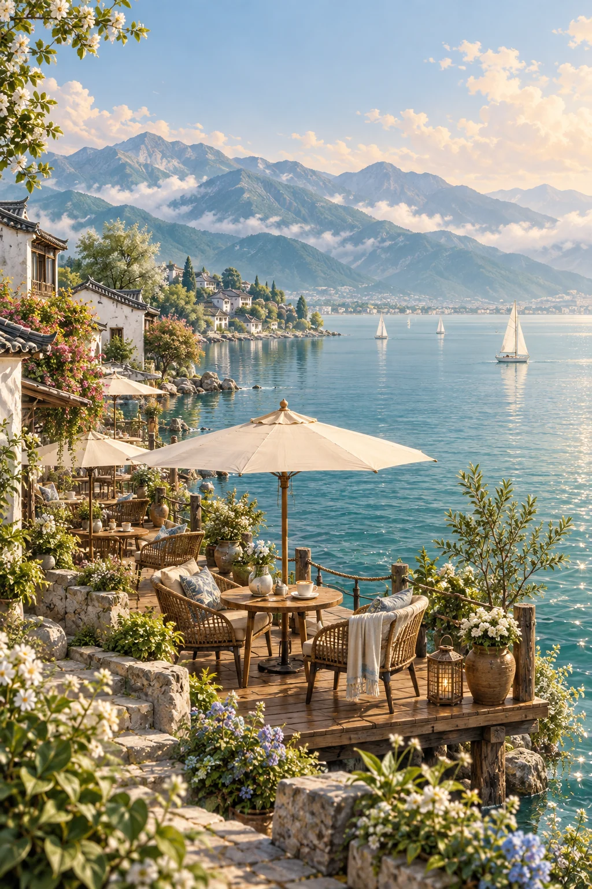
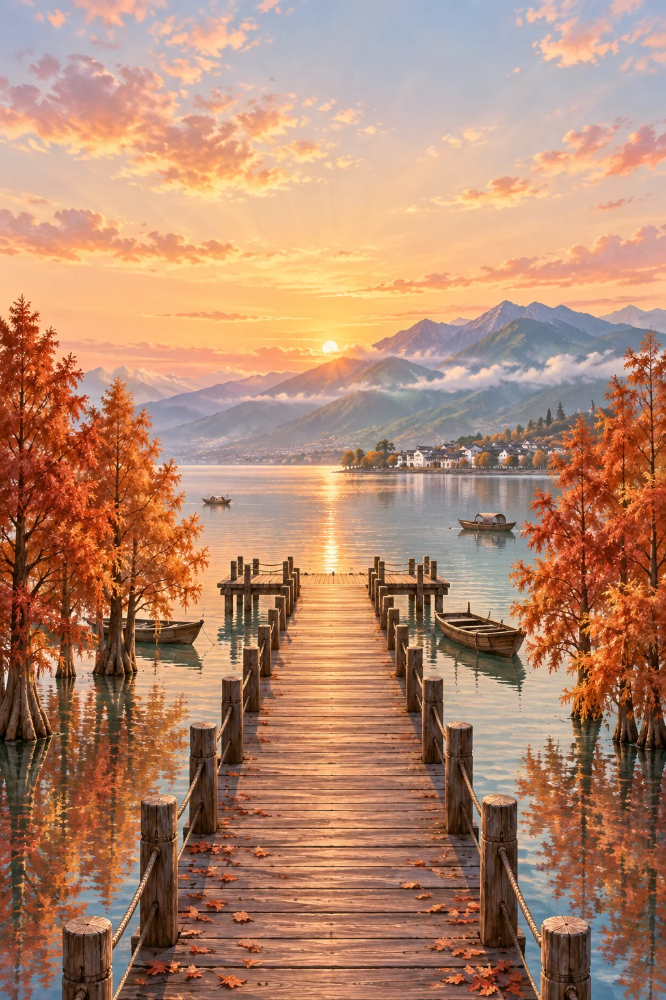
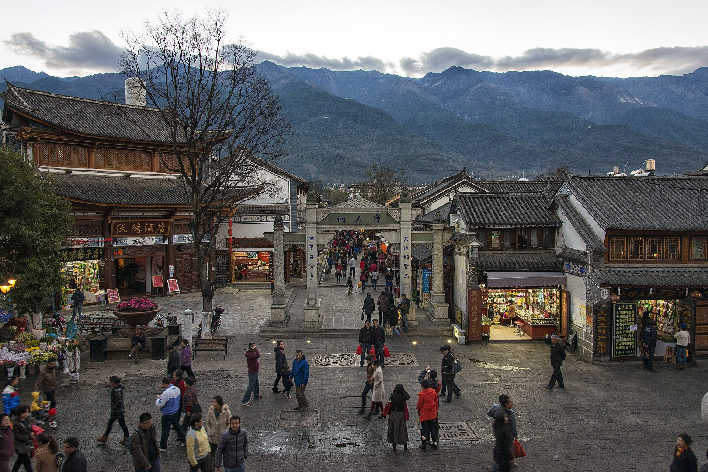
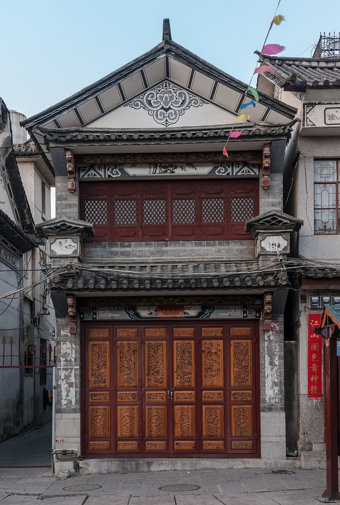
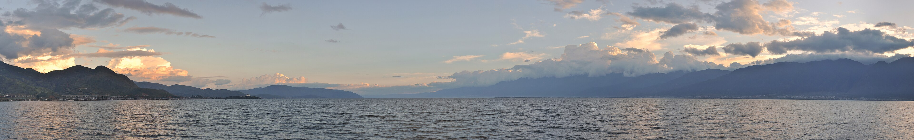
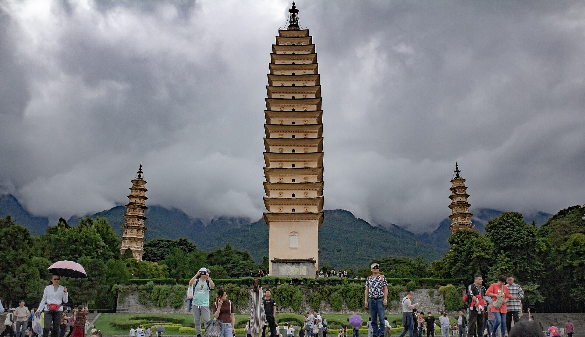
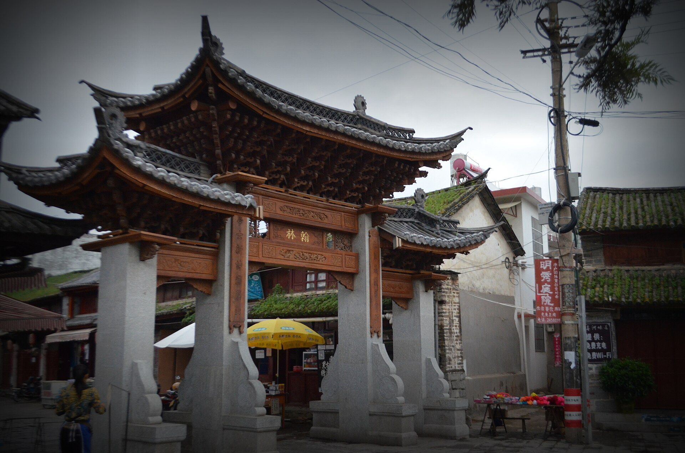
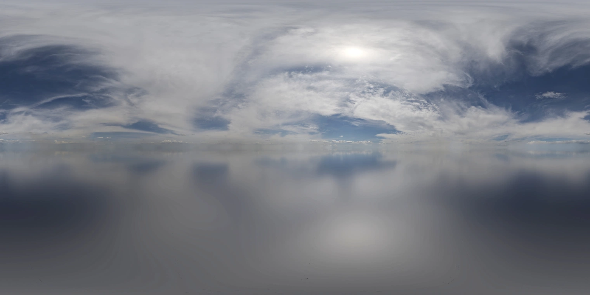

THE PEOPLE BEHIND THE SCENERY
风景有来处
当前版本以六幅原创 AI 插画展现大理灵感的微缩景观，随手指滚动推进与转场。画面是艺术化演绎，并非现场照片或真实导航。旧版摄影素材及其作者、来源与授权也保留在本页，便于查阅历史手账。
六幕大理 · 原创微缩插画
创作记录与提示词 ↗{kind=link}
大理古城
按统一暖色、精细景观画风生成；压缩为本地 WebP，用于滚动画卷与旅行明信片。
{kind=link}
崇圣寺三塔
按统一暖色、精细景观画风生成；压缩为本地 WebP，用于滚动画卷与旅行明信片。
{kind=link}

苍山花甸
按统一暖色、精细景观画风生成；压缩为本地 WebP，用于滚动画卷与旅行明信片。
{kind=link}

喜洲古镇
按统一暖色、精细景观画风生成；压缩为本地 WebP，用于滚动画卷与旅行明信片。
{kind=link}

洱海咖啡
按统一暖色、精细景观画风生成；压缩为本地 WebP，用于滚动画卷与旅行明信片。
{kind=link}

龙龛码头
按统一暖色、精细景观画风生成；压缩为本地 WebP，用于滚动画卷与旅行明信片。
参考用户提供的沉浸式旅游 H5 的交互方向，重新创作大理主题场景；未使用参考视频的画面或音频。入口地图同为 AI 原创插画。下方摄影与材质仅供旧版来源及旧手账署名查阅，当前滚动画卷不会加载它们。
旧版资料 · 五张真实的风景
查看照片来源明细 ↗{kind=link}

古城街巷
街屋比例与石板路的建模参照；苍山局部裁片映射到远景弧面。
{kind=link}

一扇白族木门
局部裁切与 UV 映射，用于三维街屋的木雕门、格窗和墙饰。
{kind=link}

洱海那一边
映射到远景弧面，湖面裁片也用于近景水纹；不是 360° 全景。
{kind=link}

苍山下的三塔
三塔形制与比例参照；真实窗饰裁片映射到各层塔身。
{kind=link}

喜洲翰林坊
白族牌坊的柱梁关系、重檐和细部形制参照。
修改说明：照片以缩小版本展示；场景使用局部裁切、UV 映射或远景投影。上述 CC BY-SA 照片及其改编图像继续采用各自标注的许可，并保留作者、来源及修改说明。照片的授权不代表摄影者对本游戏的认可。
旧版资料 · 表面材质与天空
查看材质来源明细 ↗Powered by Poly Haven · 以下六套 PBR 材质由 Rob Tuytel 制作，均采用 CC0 1.0。它们是通用表面素材，不是大理现场扫描。
- 灰石板 · Cobblestone Floor 02 ↗道路石纹、法线与粗糙度
- 白灰墙 · White Plaster 02 ↗建筑墙面的颗粒与磨损
- 旧木料 · Rough Wood ↗木构件与栈桥的风化纹理
- 灰瓦 · Grey Roof Tiles ↗屋顶瓦片与表面细节
- 草岩 · Aerial Grass Rock ↗地表、岩石与苔草纹理
- 树皮 · Bark Brown 01 ↗树干纵纹与凹凸细节

原始摄影 Greg Zaal · 纯天空编辑 Jarod Guest · CC0 1.0
来自大理以外的真实摄影 HDRI，提供天空、环境光与反射；不冒充大理实景天空。